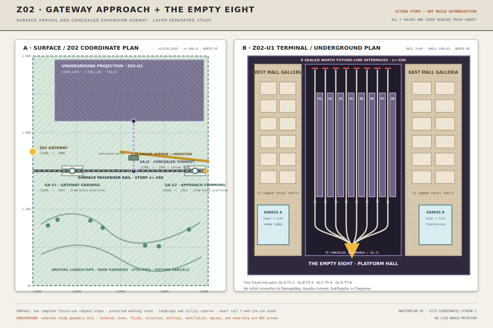
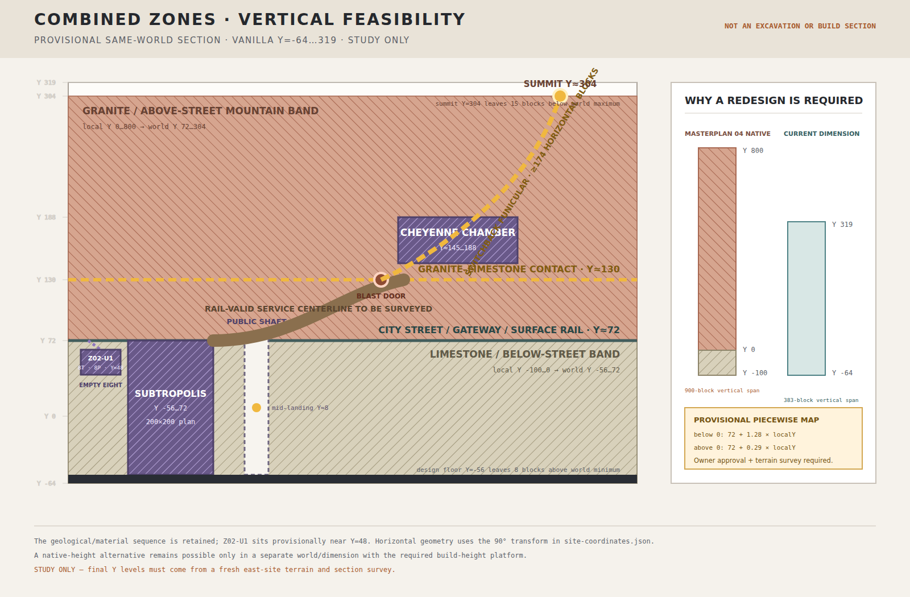
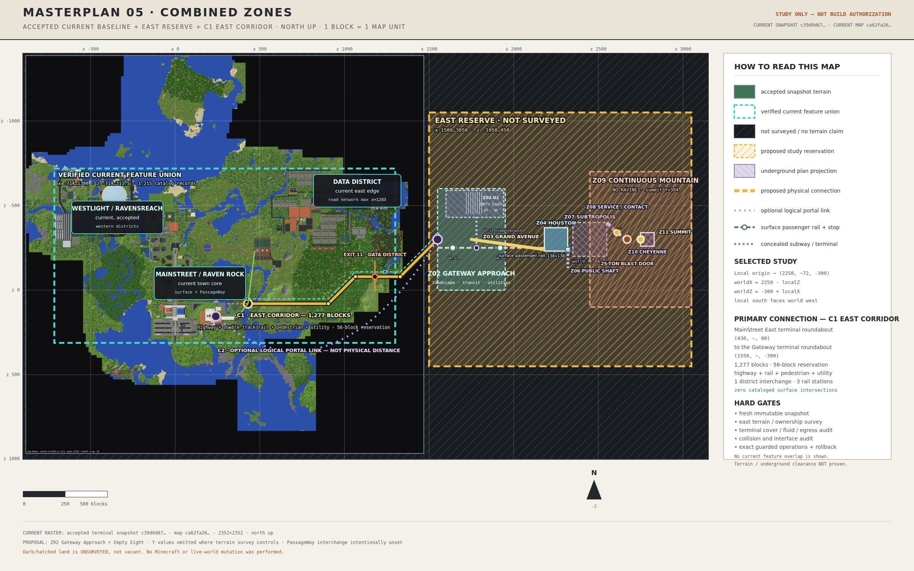
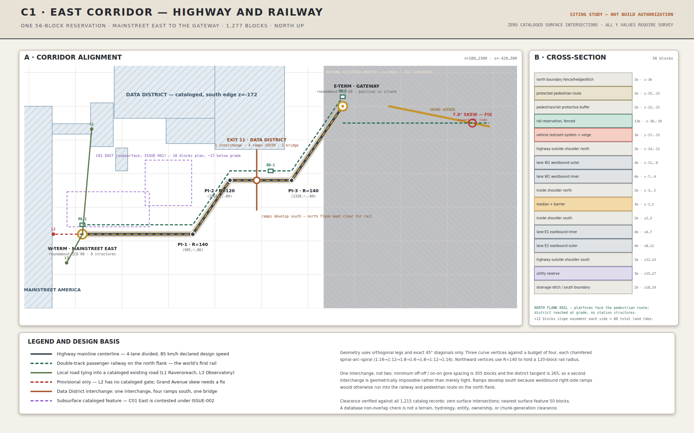

D02
11 HOLDS
Civil + drainage
Accepts the evidence taxonomy, exact C1 raster, ten capped-sump candidates, and ROAD-LOW-001 no-build hold as the basis for more technical work.
This report turns the four source-bound packets and their recorded acceptance into one human review surface. It shows the exact planning choices, their maps and concept imagery, every retained HOLD, the owner's actual approval words, and the controlling bundle statement incorporated by reference.
The recorded acceptance gives the autonomous design work one controlling checklist and freezes P1-B11’s former remaining geometry choice. It does not make the design buildable.
Accepts the evidence taxonomy, exact C1 raster, ten capped-sump candidates, and ROAD-LOW-001 no-build hold as the basis for more technical work.
Accepts FM-01 and the default-deny material, support, hydrology, relic, transport, ownership, and interface checklist as policy—not future cells.
Accepts fail-closed B07 and Empty Eight reservations plus eleven life-safety development criteria; every opening and discharge remains sealed.
Accepts the exact Grand Avenue profile, evidenced anchors, zero-cell PassageWay deferral, and sealed future-line dispositions.
The distinction is deliberate: this is authority to continue exact offline design against a fixed checklist, not authority to build or operate anything.
The maps below are authored planning views. They show current-world integration and setout intent; they are not operation manifests or proof of built conditions.



The profile is exact planning geometry: 299 unique, eight-connected centerline points, no terrain-Y substitution, and a maximum one-block vertical step.


The PassageWay endpoint is not evidenced, so its proposed route and interaction sets are empty. All 16 future-line wall reference points remain sealed. Exact physical seam cells still require the later G04/G05 audits.
The proposed -3…+4 Z-offset creates 2,392 road cells, 11,960 interaction cells, and 5,980 load/drainage/utility reservation cells. This removes three geometry-null domains for a later G03 regeneration, projecting its unresolved count from null to 16 without self-passing the gate.
The B12 shared load set is 4,784 cells; Houston coordination is 260 cells. Materials, earthwork, drainage hydraulics, utilities, road loading, geotechnical design, complete-save clearance, ownership/interfaces, and physical release remain HOLD.
This resolves the sequencing question without pretending the tunnel is construction-ready. A future excavation would be much more disruptive after Grand Avenue is complete, so the exact option is preserved now. Fit-out, openings, and public use remain out of scope.
Decision rule: Do not build the shell; retain the no-foreclosure reservation and sealed/null interfaces. The exact candidate still has 8 HOLDs, zero accepted construction/material/owner/interface/operation cells, and zero permission to excavate. The broader shallow-screen recommendation remains RESERVE_NOW_CONDITIONAL_SEALED_SHELL_BEFORE_ROAD_NO_FITOUT_ZERO_OPERATIONS.
The counts below come directly from the bound packets and R00 audit. Candidate cells are planning derivations, never operations.
Ten exact candidates serve the strict-clear low runs; ROAD-LOW-001 stays unserved under a no-build preservation hold. The post-approval technical matrix now distinguishes developed geometry from missing design evidence.
The bounded C01 stack proposal partitions 7,803 terminal cells with zero unassigned and withholds 45 of 54 local drainage cells under exact load-path precedence.
Technical 5a3b44309b00…e3ac2f0c
The analytic surface is now a complete sparse material proposal, and every support gap has exactly one status. Treatments, owners, and acceptance remain absent.
Proposal ee688150305d…b31c614b
West-two avoids recorded structures but crosses current water. Exact internal equipment/carrier proposals now exist; functional states, external routes/receivers, commissioning, and openings stay null, capped, or sealed.
Setout 55eaab99b53a…be37c12f
The registry assigns all 15,286,976 construction/interaction-union cells exactly once, with 0 unowned and 0 multiply owned cells. It retains 10 separate nonphysical influence-steward records and 41 exact precedence adjudications. Its 161 directional, default-deny contracts include 148 exact cell sets and 109 transition-pair hashes; 13 genuine external endpoints remain null/HOLD.
No wildcard, bidirectional, shared-owner, silent-clipping, or last-writer-wins rule is allowed. Accepted owners and interfaces remain zero until the technical gaps close and the sole owner accepts one final immutable registry identity.
The canonical G03-v3 setout independently normalizes 10 scopes and all 30 required construction/interaction/influence domains. It discloses 6 expanded-set overlaps and leaves 0 required geometry domains unresolved; G03 is now PASS as proposal geometry only.
B09 now has an exact 7,800-cell funicular envelope with 9 station, guideway/support, maintenance/egress, rescue, power/control, and drainage reservation layers. Its 2 interfaces remain sealed, and 8 system/acceptance classes remain HOLD.
G06 checks all 30 exact G03 domains against 114 generated starts and 3 evidence cores in 3,510 domain/subject evaluations. The owner resolved preserve-versus-remove for the shipwreck in favor of controlled-removal engineering. The exact 126-cell P1-B10 influence overlap remains a technical-treatment HOLD, matching the separate D05 support finding. The 2,268-cell census box and current 1,118 non-air cells are not deletion sets; attribution, three-chest salvage, desired post states, positive expert margins, complete-save evidence, and final G06 acceptance remain HOLD.
Shipwreck owner-policy payload: 09f85526e18df771b1c56c9ad95cbf759f10df90ea1eba6e200cda3339b9fe87. It authorizes no operation or world edit.
R00 evaluates G01–G07 only. Later G08–G19 evidence is deferred and cannot be used backward to close design decisions.
| Status | Gate | Current result / blockers |
|---|---|---|
| PASS | G01 · Authority | Authority chain and release boundary are bound. |
| PASS | G02 · Design Decisions | Authority chain and release boundary are bound. |
| PASS | G03 · Integer Set Out | Authority chain and release boundary are bound. |
| PASS | G04 · Ownership | Authority chain and release boundary are bound. |
| PASS | G05 · Interfaces | Authority chain and release boundary are bound. |
| PASS | G06 · Protected Features | Authority chain and release boundary are bound. |
| PASS | G07 · Civil Hydrology Structure | Authority chain and release boundary are bound. |
The order matters because cell ownership and global interface checks cannot be credible until the technical inputs and canonical integer sets exist.
The record binds the actual approval words, accepted-by identity, UTC time, bundle file hash, payload hash, and controlling statement incorporated by reference. It freezes P1-B11 while passing no technical HOLD.
The owner policy resolves preserve versus remove. Compile exact independently attributed hull targets, desired post states, three-chest NBT/inventory salvage, demolition influence/staging, ownership/interfaces, and strict rollback from one complete save. Packed ice, snow, terrain, support, generated-start metadata, and every unattributed cell remain default-deny.
Include region, entities, POI, and level.dat from one frozen copy. The dedicated intake validator finds 51 region files but zero entity and POI files and no level.dat, so it fails closed.
D02 now has a 6-PASS/11-HOLD matrix; D05 partitions all candidate and support-gap cells; D06 binds 29 non-executable commissioning contracts. Capacity, treatment, powered systems, receivers, complete-save evidence, and independent technical acceptance remain.
G03 has zero unresolved geometry domains and offline G04 has zero unowned or multiply owned cells. Resolve the remaining 13 genuine external endpoint geometries, add before/future transition states, and then bind technical and final owner/interface acceptance to one identity.
Only an all-PASS audit can move planning toward the separate bounded pilot release. Forward/rollback operations, source guards, authorization, execution, and post-QA remain later gates.
The owner's exact approval utterance was:
yes I approve then, please continue to engineer and fan out into teams if you need to. Also does it make sense to put a tunnel under grandave now and add to it later than try to add it later?
The canonical bundle statement was not recited verbatim; it was incorporated by reference from the immediately preceding hash-bound explanation:
I, the sole owner, accept Combined Zones R00 owner-review bundle SHA-256 0247737584ed9287632a8b6a8c18e7428b44f7301b9574d91a9db11e14ca9fdc as the controlling planning-policy and technical-development checklist. I acknowledge every listed limitation and do not mark any current HOLD as PASS or authorize construction, operations, opening, discharge, commissioning, release advancement, or a world edit.
Recorded decision: ACCEPT_PLANNING_POLICY_AND_TECHNICAL_DEVELOPMENT_CHECKLIST. Acceptance-record payload SHA-256: 45fab3ea31163b24d7242cfe7a262d80ae906c411422effe8756c75fb436ab7d. Acceptance is limited to the bound planning policy and technical-development checklist.
The complete 64-character packet hashes below are the immutable owner-review inputs. The linked post-approval compilers are separate derivative evidence and do not alter that accepted bundle.
| Scope | Packet | File SHA-256 | Bytes |
|---|---|---|---|
| D02 | D02 sole-owner review packet | 1ed4d838fb6ff8e01a245f5232a5d98a4daa5630ead97865154a2b790c486594 |
58,663 |
| D05 | D05 sole-owner review packet | 72b1d027a3f4f519a882dcf3ba2366bae642eae33da4b4fccdae80f6f9b6ef50 |
62,442 |
| D06 | D06 sole-owner review packet | fb1facdc10bcdbbf0030a54f3dd35b28797b979006de0e21b2268f82af1df963 |
70,048 |
| B11 | B11 sole-owner review packet | d65b94f0301c703fd4e22b13fe674a90fa16ba580bfced0e2143476133742ed2 |
12,601 |
Readable acceptance record · Acceptance source JSON · Shipwreck owner policy · Shipwreck policy JSON · D02 technical matrix · D02/C01 bounded proposal · D05 future state · D05 support/materials · B09 funicular · B11 surface road · D06 contracts · D06 detailed setout · G03 setout · G06 clearance · ownership/interfaces · complete-save intake · Readable R00 audit · Combined Zones evidence index · Current master plan report
{kind=link}
{kind=link}
{kind=link}
{kind=link}
{kind=link}